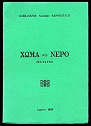 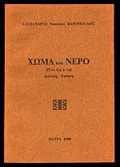 1.
ΧΩΜΑ ΚΑΙ ΝΕΡΟ
(Α' έκδοση: τυπώθηκε το 1986 στο τυπογραφείο "Εκδοτική - Κ.
Βλαχόπουλος στο Αγρίνιο / σελίδες 40)
(Β' έκδοση: τυπώθηκε το 1990 στο τυπογραφείο του Πέτρου Κούλη στην
Πάτρα / σελίδες 40)
"Στον πατέρα μου
ιερέα Νικόλαο Αθ. Βαρόπουλο
και στη μητέρα μου Κωνσταντίνα"
ΑΦΙΕΡΩΜΑ ΜΝΗΜΗΣ |
| |
| 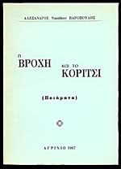 2.
Η ΒΡΟΧΗ ΚΑΙ ΤΟ ΚΟΡΙΤΣΙ
(Τυπώθηκε το 1987 στο τυπογραφείο "Εκδοτική - Κ. Βλαχόπουλος
στο Αγρίνιο / σελίδες 40)
"Στη γυναίκα μου
Ευδοξία
και στο γιο μου
Νικόλαο"
|
| |
| 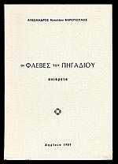 3.
ΟΙ ΦΛΕΒΕΣ ΤΟΥ ΠΗΓΑΔΙΟΥ
(Τυπώθηκε το 1989 στο τυπογραφείο "Εκδοτική - Κ. Βλαχόπουλος
στο Αγρίνιο / σελίδες 48) |
| |
| 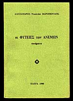 4.
ΟΙ ΦΥΤΕΙΕΣ ΤΩΝ ΑΝΕΜΩΝ
(Τυπώθηκε τον Μάιο του 1990 στο τυπογραφείο του Πέτρου Κούλη στην
Πάτρα / σελίδες 64) |
| |
| 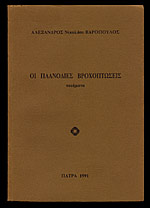 5.
ΟΙ ΠΛΑΝΟΔΙΕΣ ΒΡΟΧΟΠΤΩΣΕΙΣ
(Τυπώθηκε το Γενάρη του 1991 στο τυπογραφείο του Πέτρου Κούλη στην
Πάτρα / σελίδες 72) |
| |
| 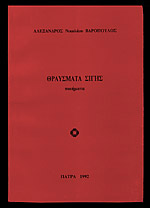 6.
ΘΡΑΥΣΜΑΤΑ ΣΙΓΗΣ
(Τυπώθηκε το Γενάρη του 1992 στο τυπογραφείο του Πέτρου Κούλη στην
Πάτρα / σελίδες 64) |
| |
| 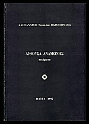 7.
ΑΙΘΟΥΣΑ ΑΝΑΜΟΝΗΣ
(Τυπώθηκε το Γενάρη του 1992 στο τυπογραφείο του Πέτρου Κούλη στην
Πάτρα / σελίδες 64) |
| |
| 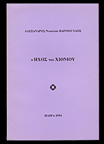 8.
Ο ΗΧΟΣ ΤΟΥ ΧΙΟΝΙΟΥ
(Τυπώθηκε το Δεκέμβρη του 1993 στο τυπογραφείο του Πέτρου Κούλη στην
Πάτρα / σελίδες 64) |
| |
| 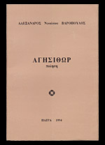 9.
ΑΓΗΣΙΘΩΡ
(Τυπώθηκε το Φθινόπωρο του 1994 στο τυπογραφείο του Πέτρου Κούλη στην
Πάτρα / σελίδες 80)
|
| |
| 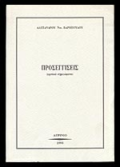 10.
ΠΡΟΣΕΓΓΙΣΕΙΣ (κριτικά σημειώματα)
(Τυπώθηκε τον Αύγουστο του 1995 στο τυπογραφείο του Πέτρου Κούλη στην
Πάτρα / σελίδες 176)
(ΕΝΟΤΗΤΕΣ: Ποίηση, Μυθιστόρημα, Διηγήματα-Αφηγήματα, Μελέτες-Δοκίμια,
Λαογραφία, Εικαστικά)
|
| |
| 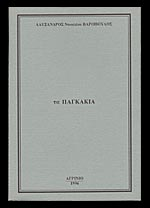 11.
τα ΠΑΓΚΑΚΙΑ
(Τυπώθηκε το Νοέμβρη του 1996 στο τυπογραφείο του Πέτρου Κούλη στην
Πάτρα / σελίδες 88) |
| |
| 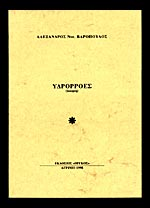 12.
ΥΔΡΟΡΡΟΕΣ (1998)
(Τυπώθηκε το Μάιο του 1998 στο τυπογραφείο του Παναγιώτη Νάστα στο
Αγρίνιο / σελίδες 48)
Επιμέλεια έκδοσης: Γιάννης Δ. Καραμητσόπουλος |
| |
| 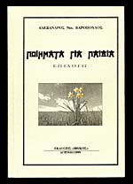 13.
ΠΟΙΗΜΑΤΑ ΓΙΑ ΠΑΙΔΙΑ (1999)
(Τυπώθηκε τον Απρίλιο του 1999 στο τυπογραφείο του Παναγιώτη Νάστα
στο Αγρίνιο / σελίδες 64)
Την έκδοση επιμελήθηκαν οι "Εκδόσεις Ιβυκος" (Γιώργος &
Γιάνννης Καραμητσόπουλος και η φιλόλογος Χρυσούλα Σπυρέλη) |
| |
| 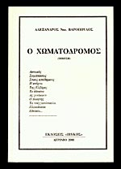 14.
Ο ΧΩΜΑΤΟΔΡΟΜΟΣ (2001)
(Στοιχειοθετήθηκε και φιλμοποιήθηκε στις ΕΚΔΟΣΕΙΣ ΙΒΥΚΟΣ. Τυπώθηκε
τον Ιανουάριο του 2001 στο τυπογραφείο του Παναγιώτη Νάστα στο Αγρίνιο
/ σελίδες 64) |